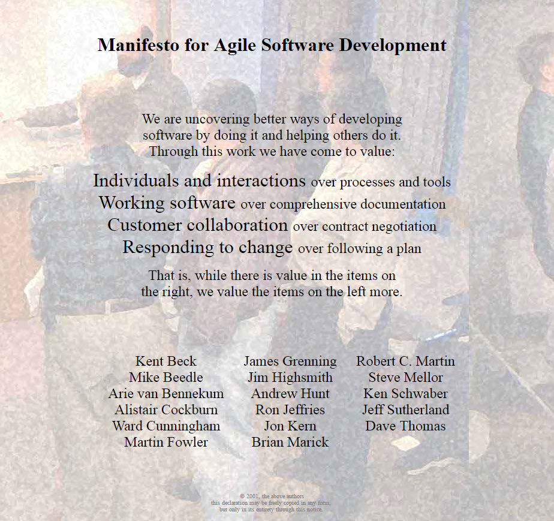

<!DOCTYPE html>
<html lang="en">
  <head>
    <meta charset="utf-8" />
    <meta name="viewport" content="width=device-width, initial-scale=1.0, maximum-scale=1.0, user-scalable=no" />

    <title>Making sense of things</title>
    <link rel="stylesheet" href="dist/reveal.css" />
    <link rel="stylesheet" href="dist/theme/black.css" id="theme" />
    <link rel="stylesheet" href="plugin/highlight/monokai.css" />
	<link rel="stylesheet" href="css/layout.css" />
	<link rel="stylesheet" href="plugin/customcontrols/style.css">


    <script defer src="dist/fontawesome/all.min.js"></script>

	<script type="text/javascript">
		var forgetPop = true;
		function onPopState(event) {
			if(forgetPop){
				forgetPop = false;
			} else {
				parent.postMessage(event.target.location.href, "app://obsidian.md");
			}
        }
		window.onpopstate = onPopState;
		window.onmessage = event => {
			if(event.data == "reload"){
				window.document.location.reload();
			}
			forgetPop = true;
		}

		function fitElements(){
			const itemsToFit = document.getElementsByClassName('fitText');
			for (const item in itemsToFit) {
				if (Object.hasOwnProperty.call(itemsToFit, item)) {
					var element = itemsToFit[item];
					fitElement(element,1, 1000);
					element.classList.remove('fitText');
				}
			}
		}

		function fitElement(element, start, end){

			let size = (end + start) / 2;
			element.style.fontSize = `${size}px`;

			if(Math.abs(start - end) < 1){
				while(element.scrollHeight > element.offsetHeight){
					size--;
					element.style.fontSize = `${size}px`;
				}
				return;
			}

			if(element.scrollHeight > element.offsetHeight){
				fitElement(element, start, size);
			} else {
				fitElement(element, size, end);
			}		
		}


		document.onreadystatechange = () => {
			fitElements();
			if (document.readyState === 'complete') {
				if (window.location.href.indexOf("?export") != -1){
					parent.postMessage(event.target.location.href, "app://obsidian.md");
				}
				if (window.location.href.indexOf("print-pdf") != -1){
					let stateCheck = setInterval(() => {
						clearInterval(stateCheck);
						window.print();
					}, 250);
				}
			}
	};


        </script>
  </head>
  <body>
    <div class="reveal">
      <div class="slides"><section  data-markdown><script type="text/template"><!-- .slide: class="drop" -->
<div class="" style="position: absolute; left: 0px; top: 0px; height: 700px; width: 960px; min-height: 700px; display: flex; flex-direction: column; align-items: center; justify-content: center" absolute="true">

### Disclaimer ###
</div>

<aside class="notes"><ul>
<li><p>I do my best to make this talk as accessible and understandable as possible. However, I am only human and also a victim of my own biases.</p>
</li>
<li><p>The idea for this talk has been brewing in my head for a very very very long time. It was only when I began studying the topics, with the idea of explaining them to others, that I realised how opinionated some of my perceptions are.</p>
</li>
<li><p>Most of things I will mention today will be touched only superficially. This is because, each one of them could be a subject for a half an hour long talk.</p>
</li>
</ul>
</aside></script></section><section  data-markdown><script type="text/template"><!-- .slide: class="drop" -->
<div class="" style="position: absolute; left: 0px; top: 0px; height: 700px; width: 960px; min-height: 700px; display: flex; flex-direction: column; align-items: center; justify-content: center" absolute="true">

That thing. <font color="turquoise">Yes</font>, the one you know.
<split even>
might not be what you think it is...
</split>
</div>

<aside class="notes"><p>Today, I&#39;d like to discuss some ideas that most of us have learned at some point in our professional lives. These are things that many people believe to be absolute truths, often explained with a simple acronym, phrase, or sentence. </p>
<p>I want to explore some of many instances when these ideas might be incorrect, confusing, misunderstood, or just not named correctly. We know it and have known it for a very long time.</p>
</aside></script></section><section  data-markdown><script type="text/template"><!-- .slide: class="drop" -->
<div class="" style="position: absolute; left: 0px; top: 0px; height: 700px; width: 960px; min-height: 700px; display: flex; flex-direction: column; align-items: center; justify-content: center" absolute="true">

> There are only two hard things in Computer Science: cache invalidation and naming things.
</div>

<aside class="notes"><p>There are a good reason why naming is considered one of the hardest problems in computer science.</p>
</aside></script></section><section  data-markdown><script type="text/template"><!-- .slide: class="drop" -->
<div class="" style="position: absolute; left: 0px; top: 0px; height: 700px; width: 960px; min-height: 700px; display: flex; flex-direction: column; align-items: center; justify-content: center" absolute="true">

## Trying to make some sense of ~~all~~ some of this mess
</div>

<aside class="notes"><p>Let&#39;s try to make some sense of all this mess, starting with ...</p>
</aside></script></section><section ><section data-markdown><script type="text/template"><!-- .slide: class="drop" -->
<div class="" style="position: absolute; left: 0px; top: 0px; height: 700px; width: 960px; min-height: 700px; display: flex; flex-direction: column; align-items: center; justify-content: center" absolute="true">

## marketing
</div>

<aside class="notes"><p>Marketing! It&#39;s is pretty cool. It connects people selling things to people wanting to buy them. This helps us earn money, which can be used to create more things to sell and invest even more in marketing. A circle of sorts.</p>
<p>But, more times than not, it tries to make people want to buy things.</p>
<p>One of the strategies is to link a product to other popular concept. It&#39;s a way to grab people&#39;s attention and make them desire the linked product.</p>
</aside></script></section><section data-markdown><script type="text/template"><!-- .slide: class="drop" -->
<div class="" style="position: absolute; left: 0px; top: 0px; height: 700px; width: 960px; min-height: 700px; display: flex; flex-direction: column; align-items: center; justify-content: center" absolute="true">


notes:
Not so long ago we witnessed an intereresting take on this angle.
</div></script></section><section data-markdown><script type="text/template"><!-- .slide: class="drop" -->
<div class="" style="position: absolute; left: 0px; top: 0px; height: 700px; width: 960px; min-height: 700px; display: flex; flex-direction: column; align-items: center; justify-content: center" absolute="true">

Which is why this quote resonated with me:

> Every term that refers to something useful will become meaningless. Precisely _because_ the original thing is useful, the term becomes valuable for marketing. This means that stretching the term to include things not quite under the original definition allows them to benefit from the perceived value of the original thing. And that establishes a precedent, allowing things even a little further away to get the label, and the scope creeps ever outward.

\- [Ben Kehoe](https://ben11kehoe.medium.com/?source=post_page-----cc004936dee5--------------------------------), [The Meaning of Serverless](https://ben11kehoe.medium.com/the-meaning-lessness-of-serverless-cc004936dee5)
</div>

<aside class="notes"><p>Which is why this quote resonated with me. <span style="color:red">Read it out loud from the screen.</span></p>
</aside></script></section></section><section  data-markdown><script type="text/template"><!-- .slide: class="drop" -->
<div class="" style="position: absolute; left: 0px; top: 0px; height: 700px; width: 960px; min-height: 700px; display: flex; flex-direction: column; align-items: center; justify-content: center" absolute="true">

Notes:
This slide is intentionally left blank
</div></script></section><section ><section data-markdown><script type="text/template"><!-- .slide: class="drop" -->
<div class="" style="position: absolute; left: 0px; top: 0px; height: 700px; width: 960px; min-height: 700px; display: flex; flex-direction: column; align-items: center; justify-content: center" absolute="true">

Agile



notes:

The first term that comes to mind when thinking about success to the point of losing its original meaning is "agile." What initially began as a highly influential manifesto in 2001, representing the thoughts of a few individuals on the better way to develop software, has, over time, been co-opted into a marketable product, rendering its original intent almost unrecognizable.

Over time, it became an entire industry producing various methodologies and frameworks that promised to have a recipe for better ways of developing software.
</div></script></section><section data-markdown><script type="text/template"><!-- .slide: class="drop" -->
<div class="" style="position: absolute; left: 0px; top: 0px; height: 700px; width: 960px; min-height: 700px; display: flex; flex-direction: column; align-items: center; justify-content: center" absolute="true">

dogma

notes:
Agile, as the term is used today has very little semblance to what it originally was. What began as a set of guiding principles in the Agile Manifesto has, for some, transformed into a strict adherence to specific methodologies, rather than adaptability and continuous improvement. In lots of organizations, it is practiced without a true understanding of the underlying mindset, often resulting in a one-size-fits-all approach that doesn't account for the unique needs and contexts of different projects. In these cases, agility becomes a set of rules to follow rather than a philosophy that encourages teams to respond to change, collaborate effectively, and prioritize customer satisfaction.
</div></script></section><section data-markdown><script type="text/template"><!-- .slide: class="drop" -->
<div class="" style="position: absolute; left: 0px; top: 0px; height: 700px; width: 960px; min-height: 700px; display: flex; flex-direction: column; align-items: center; justify-content: center" absolute="true">

Scrum

notes:
Scrum and the scrum certification stands out as one of the best examples of this. It was so long on the forefront of the agile movement that many people associate the work agile with Scrum.

But Scrum is about project management, it's not about software. Even in the seminal work on Scrum, [_Agile Software Development with Scrum_](https://www.amazon.com/Agile-Software-Development-Scrum/dp/0130676349) it is noted that Scrum is an addition to agile (typically Extreme Programming), not a substitute to it.
</div></script></section><section data-markdown><script type="text/template"><!-- .slide: class="drop" -->
<div class="" style="position: absolute; left: 0px; top: 0px; height: 700px; width: 960px; min-height: 700px; display: flex; flex-direction: column; align-items: center; justify-content: center" absolute="true">


notes:
Another notable example would be SAFe, a process pretending to be agile while trying very hard to adopt the process already exiting in most organisations. It focuses on predictable delivery, not learning, not course correction.
</div></script></section></section><section  data-markdown><script type="text/template"><!-- .slide: class="drop" -->
<div class="" style="position: absolute; left: 0px; top: 0px; height: 700px; width: 960px; min-height: 700px; display: flex; flex-direction: column; align-items: center; justify-content: center" absolute="true">

speaking about dogmatic practices
</div>

<aside class="notes"><p>Let&#39;s mention a few better-known ones.</p>
</aside></script></section><section ><section data-markdown><script type="text/template"><!-- .slide: class="drop" -->
<div class="" style="position: absolute; left: 0px; top: 0px; height: 700px; width: 960px; min-height: 700px; display: flex; flex-direction: column; align-items: center; justify-content: center" absolute="true">

<span style="color: transparent">premature</span> optimization is the root of all evil
</div>

<aside class="notes"><p>Starting with oldie but goodie. But this seams incomplete, although I&#39;ve seen it used as this.</p>
</aside></script></section><section data-markdown><script type="text/template"><!-- .slide: class="drop" -->
<div class="" style="position: absolute; left: 0px; top: 0px; height: 700px; width: 960px; min-height: 700px; display: flex; flex-direction: column; align-items: center; justify-content: center" absolute="true">

premature optimization is the root of all evil
</div>

<aside class="notes"><p>ah, that&#39;s better. ^ It&#39;s THE premature optimisation that is the root of all evil we are talking about, but ...</p>
</aside></script></section><section data-markdown><script type="text/template"><!-- .slide: class="drop" -->
<div class="" style="position: absolute; left: 0px; top: 0px; height: 700px; width: 960px; min-height: 700px; display: flex; flex-direction: column; align-items: center; justify-content: center" absolute="true">

but, the full quote goes:

> Programmers waste enormous amounts of time thinking about, or worrying about, the speed of noncritical parts of their programs, and these attempts at efficiency actually have a strong negative impact when debugging and maintenance are considered. We _should_ forget about small efficiencies, say about 97% of the time: <span style="color:yellow">**premature optimization is the root of all evil.**</span> Yet we should not pass up our opportunities in that critical 3%
</div>

<aside class="notes"><p>and this completely changes the age-old wisdom retold incompletely through generations of software makers.</p>
</aside></script></section><section data-markdown><script type="text/template"><!-- .slide: class="drop" -->
<div class="" style="position: absolute; left: 0px; top: 0px; height: 700px; width: 960px; min-height: 700px; display: flex; flex-direction: column; align-items: center; justify-content: center" absolute="true">

... but if defined as optimising code for <span style="color: orange">unknown unknowns</span>
</div>

<aside class="notes"><p>A funny thing here is that advances in processing speeds have completely changed what most people understand optimisation means between 1974. when Donald Knuth wrote the paper &quot;Structured Programming With Go-To Statements&quot; and today there is some merit to the original interpretation if it&#39;s explained in the context of optimising code for unknown unknowns.</p>
</aside></script></section></section><section ><section data-markdown><script type="text/template"><!-- .slide: class="drop" -->
<div class="" style="position: absolute; left: 0px; top: 0px; height: 700px; width: 960px; min-height: 700px; display: flex; flex-direction: column; align-items: center; justify-content: center" absolute="true">

dependency injection
</div>

<aside class="notes"><p>Now this concept sounds scarry when you hear it for the first time. Especially as people ten to connect to something known as inversion of control. Although it is but a subset of that particular concept. In layman terms this can also be expressed by a somewhat less mysterious name of</p>
</aside></script></section><section data-markdown><script type="text/template"><!-- .slide: class="drop" -->
<div class="" style="position: absolute; left: 0px; top: 0px; height: 700px; width: 960px; min-height: 700px; display: flex; flex-direction: column; align-items: center; justify-content: center" absolute="true">

passing a dependency as an argument
</div>

<aside class="notes"><p>Yeah, that is mostly it. Although, as we often do we like to complicate things with someting known as dependency injection or inversion of control containers and frameworks to support those concepts. I will not talk about those except to mention that if you are ever to use them, think long and hard why and if you really need them.</p>
</aside></script></section><section data-markdown><script type="text/template"><!-- .slide: class="drop" -->
<div class="" style="position: absolute; left: 0px; top: 0px; height: 700px; width: 960px; min-height: 700px; display: flex; flex-direction: column; align-items: center; justify-content: center" absolute="true">

example, injecting a database connection

``` ruby

class FooRepository
  def initialize(ds:) # <- we expect a dataset
    @ds = ds
  end

  def with_bars
    @ds.where(kind: "bar").all
  end
end

db = Sequel.connect(uri) # using Sequel

repo = FooRepository.new(ds: db[:bars]) # <- inject db dataset


```
</div>

<aside class="notes"><p>Furthermore, FooRepository can also be composed and passed as argument elsewhere.</p>
</aside></script></section><section data-markdown><script type="text/template"><!-- .slide: class="drop" -->
<div class="" style="position: absolute; left: 0px; top: 0px; height: 700px; width: 960px; min-height: 700px; display: flex; flex-direction: column; align-items: center; justify-content: center" absolute="true">

just like Russian dolls


</div></script></section><section data-markdown><script type="text/template"><!-- .slide: class="drop" -->
<div class="" style="position: absolute; left: 0px; top: 0px; height: 700px; width: 960px; min-height: 700px; display: flex; flex-direction: column; align-items: center; justify-content: center" absolute="true">

``` ruby

	class FooRepository
	  def initialize(ds:)
	    @ds = ds
	  end
	
	  def with_bars
	    @ds.where(kind: "bar").all
	  end
	end
	
	db = OpenStruct.new(where: OpenStruct.new(all: []))
	
	repo = FooRepository.new(ds: db[:bars])


```
</div>

<aside class="notes"><p>Code written this way is very easy to test in isolation. In order to test <code>FooRepository</code> we can easily mock the dataset with anything that responds to  a method <code>where</code>.  After all in unit tests we are only supposed to test a single unit of code we wrote.</p>
</aside></script></section></section><section ><section data-markdown><script type="text/template"><!-- .slide: class="drop" -->
<div class="" style="position: absolute; left: 0px; top: 0px; height: 700px; width: 960px; min-height: 700px; display: flex; flex-direction: column; align-items: center; justify-content: center" absolute="true">

unit tests
</div>

<aside class="notes"><p>As with most other concepts I am mentioning today, we don&#39;t fully agree on what exactly is the scope of a unit test.</p>
</aside></script></section><section data-markdown><script type="text/template"><!-- .slide: class="drop" -->
<div class="" style="position: absolute; left: 0px; top: 0px; height: 700px; width: 960px; min-height: 700px; display: flex; flex-direction: column; align-items: center; justify-content: center" absolute="true">

What constitutes a unit?

It is a function , method, class, or an entire application?
</div></script></section><section data-markdown><script type="text/template"><!-- .slide: class="drop" -->
<div class="" style="position: absolute; left: 0px; top: 0px; height: 700px; width: 960px; min-height: 700px; display: flex; flex-direction: column; align-items: center; justify-content: center" absolute="true">

Yes!
</div></script></section><section data-markdown><script type="text/template"><!-- .slide: class="drop" -->
<div class="" style="position: absolute; left: 0px; top: 0px; height: 700px; width: 960px; min-height: 700px; display: flex; flex-direction: column; align-items: center; justify-content: center" absolute="true">

but it dosen't really matter
</div>

<aside class="notes"><p>It&#39;s not about size, it was never about the size. Size is irrelevant.</p>
</aside></script></section><section data-markdown><script type="text/template"><!-- .slide: class="drop" -->
<div class="" style="position: absolute; left: 0px; top: 0px; height: 700px; width: 960px; min-height: 700px; display: flex; flex-direction: column; align-items: center; justify-content: center" absolute="true">

one very important rule though
</div></script></section><section data-markdown><script type="text/template"><!-- .slide: class="drop" -->
<div class="" style="position: absolute; left: 0px; top: 0px; height: 700px; width: 960px; min-height: 700px; display: flex; flex-direction: column; align-items: center; justify-content: center" absolute="true">

No i/o allowed!
</div>

<aside class="notes"><p>No file read/write, no socket read/write, no network read/write, etc.</p>
</aside></script></section><section data-markdown><script type="text/template"><!-- .slide: class="drop" -->
<div class="" style="position: absolute; left: 0px; top: 0px; height: 700px; width: 960px; min-height: 700px; display: flex; flex-direction: column; align-items: center; justify-content: center" absolute="true">

because all kinds of speed matter
</div>

<aside class="notes"><p>There are different types of speed. test speed, speed of execution, speed of development. They all matter to one context or another. And interestingly they have a tendency to supplement each other. Fast test, helps fast iterations which facilitates fast development.</p>
<p>I/o is slow</p>
<p>slow things are better left for something that is slower by design like integration tests</p>
</aside></script></section><section data-markdown><script type="text/template"><!-- .slide: class="drop" -->
<div class="" style="position: absolute; left: 0px; top: 0px; height: 700px; width: 960px; min-height: 700px; display: flex; flex-direction: column; align-items: center; justify-content: center" absolute="true">

integration tests
</div>

<aside class="notes"><p>Ambiguous naming all over again. When doing integration tests, we are supposed to test the integration.</p>
</aside></script></section><section data-markdown><script type="text/template"><!-- .slide: class="drop" -->
<div class="" style="position: absolute; left: 0px; top: 0px; height: 700px; width: 960px; min-height: 700px; display: flex; flex-direction: column; align-items: center; justify-content: center" absolute="true">

Integration with what?

<aside class="notes"><p>integration with what?</p>
</div></aside></script></section><section data-markdown><script type="text/template"><!-- .slide: class="drop" -->
<div class="" style="position: absolute; left: 0px; top: 0px; height: 700px; width: 960px; min-height: 700px; display: flex; flex-direction: column; align-items: center; justify-content: center" absolute="true">

things that don't change often, the <span style="color:orange">infrastructure</span>
</div>

<aside class="notes"><p>stable things, like databases, file systems, queues, in general things with well defined interfaces or APIs that we fully control and can run locally (or in a container) that do not change often </p>
<p>If they changed often we would be in trouble spending more time figuring why test is suddenly failing. Like if we were doing integrated tests. Note the difference integration vs integrated.</p>
</aside></script></section><section data-markdown><script type="text/template"><!-- .slide: class="drop" -->
<div class="" style="position: absolute; left: 0px; top: 0px; height: 700px; width: 960px; min-height: 700px; display: flex; flex-direction: column; align-items: center; justify-content: center" absolute="true">

integrated tests
</div>

<aside class="notes"><p>Sometimes there are situations where one wants to tests integrated application. Interaction between components of the same system. For instance, frontend and backend. That is integrated test. These are very slow and usually better left for business critical paths. They do tend to function for a tightly integrated system (all in one app).</p>
</aside></script></section><section data-markdown><script type="text/template"><!-- .slide: class="drop" -->
<div class="" style="position: absolute; left: 0px; top: 0px; height: 700px; width: 960px; min-height: 700px; display: flex; flex-direction: column; align-items: center; justify-content: center" absolute="true">

end-to-end tests

notes:
Once system becomes distributed we call this kind of tests end to ends, hoping paradigm that served us well for so many years will be applicable in this universe.

Well it does not. I am yet to see a e2e test platform that’s not broken most of the time. It doesn’t matter if it’s small or big company it doesn’t matter if it’s a marketplace or a bank. E2E does not play with distribution. Reason, expectation of transactional consistency in inherently inconsistent environment. I will mention this later.

What works?
</div></script></section><section data-markdown><script type="text/template"><!-- .slide: class="drop" -->
<div class="" style="position: absolute; left: 0px; top: 0px; height: 700px; width: 960px; min-height: 700px; display: flex; flex-direction: column; align-items: center; justify-content: center" absolute="true">

Testing components in isolation
</div></script></section><section data-markdown><script type="text/template"><!-- .slide: class="drop" -->
<div class="" style="position: absolute; left: 0px; top: 0px; height: 700px; width: 960px; min-height: 700px; display: flex; flex-direction: column; align-items: center; justify-content: center" absolute="true">

Consumer driven code contracts

<aside class="notes"><p>Pieces of code defining consumer expectations agreed by a producer, managed by a broker and enforced by a test suite.</p>
<p>What else works alongside this?</p>
</div></aside></script></section><section data-markdown><script type="text/template"><!-- .slide: class="drop" -->
<div class="" style="position: absolute; left: 0px; top: 0px; height: 700px; width: 960px; min-height: 700px; display: flex; flex-direction: column; align-items: center; justify-content: center" absolute="true">

Testing in production
</div></script></section><section data-markdown><script type="text/template"><!-- .slide: class="drop" -->
<div class="" style="position: absolute; left: 0px; top: 0px; height: 700px; width: 960px; min-height: 700px; display: flex; flex-direction: column; align-items: center; justify-content: center" absolute="true">

I don’t mean push your code to production and see what happens.
</div>

<aside class="notes"><p>Although one may argue that also is a testing in production process. Bad one.</p>
<p>it means using feature flags to isolate the code under test for the automated test suite as one off short lived process</p>
<p>After and only after it passed all other tests layers.</p>
</aside></script></section></section><section ><section data-markdown><script type="text/template"><!-- .slide: class="drop" -->
<div class="" style="position: absolute; left: 0px; top: 0px; height: 700px; width: 960px; min-height: 700px; display: flex; flex-direction: column; align-items: center; justify-content: center" absolute="true">

Do not repeat yourself!

(DRY)
</div>

<aside class="notes"><p>I imagine most of you heard this before. And, in principle, like many other practices, it&#39;s not entirely bad advice.</p>
</aside></script></section><section data-markdown><script type="text/template"><!-- .slide: class="drop" -->
<div class="" style="position: absolute; left: 0px; top: 0px; height: 700px; width: 960px; min-height: 700px; display: flex; flex-direction: column; align-items: center; justify-content: center" absolute="true">

is applicable when the abstracted code is <span style="color: yellow">**exactly**</span> the same

```ruby

	def calculate_area(height:, width:)
	  height * width
	end


```

valuable abstraction
</div></script></section><section data-markdown><script type="text/template"><!-- .slide: class="drop" -->
<div class="" style="position: absolute; left: 0px; top: 0px; height: 700px; width: 960px; min-height: 700px; display: flex; flex-direction: column; align-items: center; justify-content: center" absolute="true">

as opposed to when code evolves and is now only <span style="color: yellow">**conceptually**</span> has the same meaning

```ruby

	def calculate_area(height: 0, width: 0, radius: 0, shape:)
	  case shape
	  when RECTANGLE then height * width
	  when TRIANGLE then (height * width) / 2
	  when CIRCLE then Math::PI * radius**2
	  else
	    raise UnknownShape
	  end
	end


```

abstraction of questionable value
</div>

<aside class="notes"><p>While one might think there is a bit of exaggeration here, this does not differ much from what can be seen out there, in the wild.</p>
</aside></script></section><section data-markdown><script type="text/template"><!-- .slide: class="drop" -->
<div class="" style="position: absolute; left: 0px; top: 0px; height: 700px; width: 960px; min-height: 700px; display: flex; flex-direction: column; align-items: center; justify-content: center" absolute="true">

in a distributed system DRY is more likely than not to be a bad idea

> We already have a User object, let's reuse it everywhere! 😉

but, in essence, the same rules apply
</div>

<aside class="notes"><p>Different business domains have very different meanings for a user even though they are called the same. Even in situations when they temporarily are the same, the likelihood of divergence is pretty high.</p>
</aside></script></section></section><section ><section data-markdown><script type="text/template"><!-- .slide: class="drop" -->
<div class="" style="position: absolute; left: 0px; top: 0px; height: 700px; width: 960px; min-height: 700px; display: flex; flex-direction: column; align-items: center; justify-content: center" absolute="true">

micro-services
</div>

<aside class="notes"><p>Since I mentioned distributed systems, and micro-services being one of the architectural patterns fitting this description, I want to continue along this tangent. This is not a new thing since, forever, but I still find it very surprising how misunderstood it is.</p>
</aside></script></section><section data-markdown><script type="text/template"><!-- .slide: class="drop" -->
<div class="" style="position: absolute; left: 0px; top: 0px; height: 700px; width: 960px; min-height: 700px; display: flex; flex-direction: column; align-items: center; justify-content: center" absolute="true">


</div>

<aside class="notes"><p>crude humor</p>
</aside></script></section><section data-markdown><script type="text/template"><!-- .slide: class="drop" -->
<div class="" style="position: absolute; left: 0px; top: 0px; height: 700px; width: 960px; min-height: 700px; display: flex; flex-direction: column; align-items: center; justify-content: center" absolute="true">

No one should care about the micro in the name.
</div>

<aside class="notes"><p>It&#39;s not about size. It was never about the size.</p>
</aside></script></section><section data-markdown><script type="text/template"><!-- .slide: class="drop" -->
<div class="" style="position: absolute; left: 0px; top: 0px; height: 700px; width: 960px; min-height: 700px; display: flex; flex-direction: column; align-items: center; justify-content: center" absolute="true">

what matters

1. decoupled (or loosely coupled) along business domain boundaries
2. eventually consistent
3. independently deployable
4. highly available
5. tooling: CI/CD, automated testing & **observability**,

Opinion 
1. async helps
</div></script></section><section data-markdown><script type="text/template"><!-- .slide: class="drop" -->
<div class="" style="position: absolute; left: 0px; top: 0px; height: 700px; width: 960px; min-height: 700px; display: flex; flex-direction: column; align-items: center; justify-content: center" absolute="true">


</div>

<aside class="notes"><p>Something similar was said for transactions</p>
</aside></script></section></section><section  data-markdown><script type="text/template"><!-- .slide: class="drop" -->
<div class="" style="position: absolute; left: 0px; top: 0px; height: 700px; width: 960px; min-height: 700px; display: flex; flex-direction: column; align-items: center; justify-content: center" absolute="true">

devops
</div>

<aside class="notes"><p>The movement that wanted to bridge the divide between software operations and software development by having teams that were capable of working in both.</p>
<p>this noble cause wanted to stop situations where engineers would finish the work and throw the code over the wall for deployment and operational concerns to the operations team by having everyone work in a team that was capable of not only deploying and operating software but helping with the paln</p>
</aside></script></section><section ><section data-markdown><script type="text/template"><!-- .slide: class="drop" -->
<div class="" style="position: absolute; left: 0px; top: 0px; height: 700px; width: 960px; min-height: 700px; display: flex; flex-direction: column; align-items: center; justify-content: center" absolute="true">

observability
</div>

<aside class="notes"><p>I did mention it in relation to microservices. And, as I was finalising preparing for this talk, a piece of wisdom unexpectedly dropped from someone who&#39;s opinion I personally value a lot.</p>
</aside></script></section><section data-markdown><script type="text/template"><!-- .slide: class="drop" -->
<div class="" style="position: absolute; left: 0px; top: 0px; height: 700px; width: 960px; min-height: 700px; display: flex; flex-direction: column; align-items: center; justify-content: center" absolute="true">


x.com/mipsytipsy/status/1719066099973849590
</div></script></section><section data-markdown><script type="text/template"><!-- .slide: class="drop" -->
<div class="" style="position: absolute; left: 0px; top: 0px; height: 700px; width: 960px; min-height: 700px; display: flex; flex-direction: column; align-items: center; justify-content: center" absolute="true">

- high cardinality
- high dimensionality, 
- traceability, 
- structured log events, 
- rich context, 
- end to end instrumentation
</div>

<aside class="notes"><ul>
<li>(lot of unique elements)</li>
<li>(across lots of different dimensions)</li>
<li>(capability to trace something, in this context someting is usually flow of data)</li>
<li>(in order to be able to do all of that logs need to formatted so that there is some structure to them and this structure needs to be same across the board)</li>
<li>(metadata about context in which the event occured needs to accompany data so that correlations can be drawn)</li>
<li>(observability needs to be ubiquotus, found everywhere, in the system)</li>
</ul>
<p>Marketing slowly transformed observability movement, the journey to improve our ability to discover and understand unknown unknowns happening in our systems, from what it used to stand for into...</p>
</aside></script></section><section data-markdown><script type="text/template"><!-- .slide: class="drop" -->
<div class="" style="position: absolute; left: 0px; top: 0px; height: 700px; width: 960px; min-height: 700px; display: flex; flex-direction: column; align-items: center; justify-content: center" absolute="true">

logs & metrics
</div>

<aside class="notes"><p>which is how it&#39;s seen by the most people in the industry today</p>
</aside></script></section></section><section ><section data-markdown><script type="text/template"><!-- .slide: class="drop" -->
<div class="" style="position: absolute; left: 0px; top: 0px; height: 700px; width: 960px; min-height: 700px; display: flex; flex-direction: column; align-items: center; justify-content: center" absolute="true">

Speaking about the industry "influencers" and prominent figures of the community...

notes:
People like Charity Majors who I deeply respect.

Yes, these people have seen things. They also have a lot of opinions about ways of building software. These opinions are sometimes very correct, sometimes result of an inflated ego, but most often somewhere in between.

Overwhelming majority of these people have good intentions, even if they are selling something. They care about the craft and they have seen and built things. But their words or books are not absolute. Even when correct they are subject to time and can become outdated.

Some of them forget to say a very important thing. Do your own investigations and apply things that work for you. Don't do things because someone somewhere told you it's cool. Even when it is.
</div></script></section><section data-markdown><script type="text/template"><!-- .slide: class="drop" -->
<div class="" style="position: absolute; left: 0px; top: 0px; height: 700px; width: 960px; min-height: 700px; display: flex; flex-direction: column; align-items: center; justify-content: center" absolute="true">

this especially includes everything I said today

notes:
I am as far as I can get to being an exception to this.
</div></script></section><section data-markdown><script type="text/template"><!-- .slide: class="drop" -->
<div class="" style="position: absolute; left: 0px; top: 0px; height: 700px; width: 960px; min-height: 700px; display: flex; flex-direction: column; align-items: center; justify-content: center" absolute="true">

every advice I gave you today is likely flawed in some way I didn't think about
</div></script></section><section data-markdown><script type="text/template"><!-- .slide: class="drop" -->
<div class="" style="position: absolute; left: 0px; top: 0px; height: 700px; width: 960px; min-height: 700px; display: flex; flex-direction: column; align-items: center; justify-content: center" absolute="true">

every explanation I gave is likely flawed for some situation I didn't know about
</div></script></section><section data-markdown><script type="text/template"><!-- .slide: class="drop" -->
<div class="" style="position: absolute; left: 0px; top: 0px; height: 700px; width: 960px; min-height: 700px; display: flex; flex-direction: column; align-items: center; justify-content: center" absolute="true">

there are no silver bullets
</div></script></section><section data-markdown><script type="text/template"><!-- .slide: class="drop" -->
<div class="" style="position: absolute; left: 0px; top: 0px; height: 700px; width: 960px; min-height: 700px; display: flex; flex-direction: column; align-items: center; justify-content: center" absolute="true">

change is the only *universal truth*

in the ever-changing universe
</div></script></section></section><section ><section data-markdown><script type="text/template"><!-- .slide: class="drop" -->
<div class="" style="position: absolute; left: 0px; top: 0px; height: 700px; width: 960px; min-height: 700px; display: flex; flex-direction: column; align-items: center; justify-content: center" absolute="true">

My name is Armin and it was a pleasure!
</div>

<aside class="notes"><p>today I am not talking for an employer, I am not recruiting and I am not looking to sell anything</p>
</aside></script></section><section data-markdown><script type="text/template"><!-- .slide: class="drop" -->
<div class="" style="position: absolute; left: 0px; top: 0px; height: 700px; width: 960px; min-height: 700px; display: flex; flex-direction: column; align-items: center; justify-content: center" absolute="true">

honorable mentions

fp, tdd, bdd, ddd, cqrs & es, trunk based development, testing in production, contract testing, ci/cd, pair/mob programing
</div>

<aside class="notes"><p>all controversial and fun, some were mentioned in the passing, but are not in the talk due to time restrictions</p>
</aside></script></section><section data-markdown><script type="text/template"><!-- .slide: class="drop" -->
<div class="" style="position: absolute; left: 0px; top: 0px; height: 700px; width: 960px; min-height: 700px; display: flex; flex-direction: column; align-items: center; justify-content: center" absolute="true">

Thank you very much!
</div>

<aside class="notes"><p>for the attention and bearing with me</p>
</aside></script></section><section data-markdown><script type="text/template"><!-- .slide: class="drop" -->
<div class="" style="position: absolute; left: 0px; top: 0px; height: 700px; width: 960px; min-height: 700px; display: flex; flex-direction: column; align-items: center; justify-content: center" absolute="true">

Questions?
</div>

<aside class="notes"><p>Is there time?</p>
</aside></script></section></section></div>
    </div>

    <script src="dist/reveal.js"></script>

    <script src="plugin/markdown/markdown.js"></script>
    <script src="plugin/highlight/highlight.js"></script>
    <script src="plugin/zoom/zoom.js"></script>
    <script src="plugin/notes/notes.js"></script>
    <script src="plugin/math/math.js"></script>
	<script src="plugin/mermaid/mermaid.js"></script>
	<script src="plugin/chart/chart.min.js"></script>
	<script src="plugin/chart/plugin.js"></script>
	<script src="plugin/customcontrols/plugin.js"></script>
	<script src="plugin/elapsed-time-bar/elapsed-time-bar.js"></script>

    <script>
      function extend() {
        var target = {};
        for (var i = 0; i < arguments.length; i++) {
          var source = arguments[i];
          for (var key in source) {
            if (source.hasOwnProperty(key)) {
              target[key] = source[key];
            }
          }
        }
        return target;
      }

	  function isLight(color) {
		let hex = color.replace('#', '');

		// convert #fff => #ffffff
		if(hex.length == 3){
			hex = `${hex[0]}${hex[0]}${hex[1]}${hex[1]}${hex[2]}${hex[2]}`;
		}

		const c_r = parseInt(hex.substr(0, 2), 16);
		const c_g = parseInt(hex.substr(2, 2), 16);
		const c_b = parseInt(hex.substr(4, 2), 16);
		const brightness = ((c_r * 299) + (c_g * 587) + (c_b * 114)) / 1000;
		return brightness > 155;
	}

	var bgColor = getComputedStyle(document.documentElement).getPropertyValue('--r-background-color').trim();
	var isLight = isLight(bgColor);

	if(isLight){
		document.body.classList.add('has-light-background');
	} else {
		document.body.classList.add('has-dark-background');
	}

      // default options to init reveal.js
      var defaultOptions = {
        controls: true,
        progress: true,
        history: true,
        center: true,
        transition: 'default', // none/fade/slide/convex/concave/zoom
        plugins: [
          RevealMarkdown,
          RevealHighlight,
          RevealZoom,
          RevealNotes,
          RevealMath.MathJax3,
		  RevealMermaid,
		  RevealChart,
		  RevealCustomControls,
		  ElapsedTimeBar
        ],


    	allottedTime: 120 * 1000,

		mathjax3: {
			mathjax: 'plugin/math/mathjax/tex-mml-chtml.js',
		},
		markdown: {
		  gfm: true,
		  mangle: true,
		  pedantic: false,
		  smartLists: false,
		  smartypants: false,
		},

		mermaid: {
			theme: isLight ? 'default' : 'dark',
		},

		customcontrols: {
			controls: [
			]
		},
      };

      // options from URL query string
      var queryOptions = Reveal().getQueryHash() || {};

      var options = extend(defaultOptions, {"width":960,"height":700,"margin":0.04,"controls":true,"progress":true,"slideNumber":false,"transition":"none","transitionSpeed":"fast"}, queryOptions);
    </script>

    <script>
      Reveal.initialize(options);
    </script>
  </body>

  <!-- created with Advanced Slides -->
</html>
